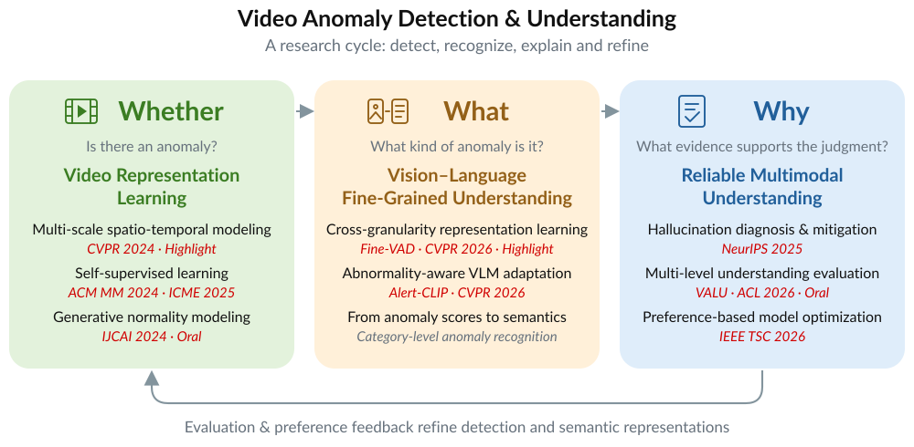
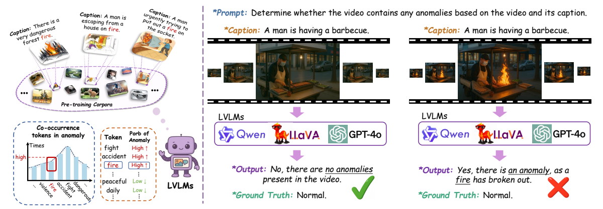
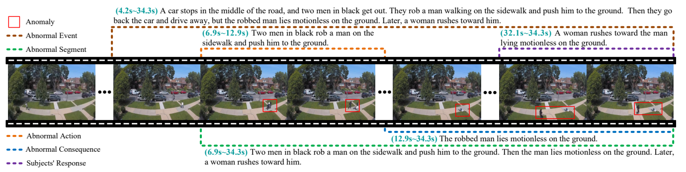
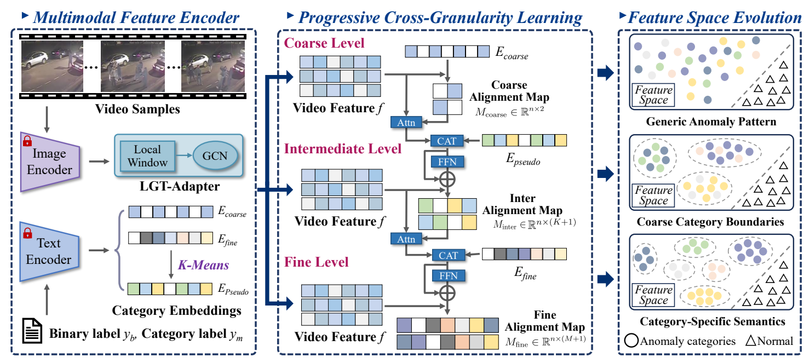
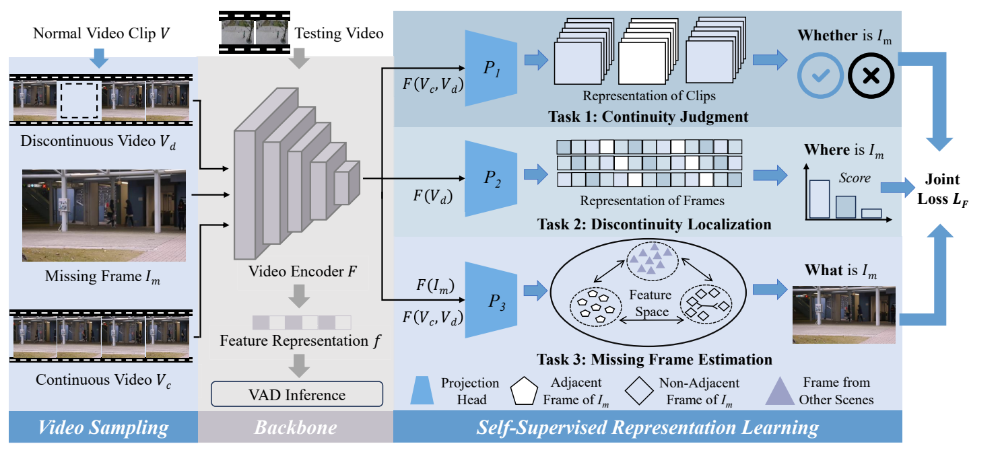

Algorithm Research Intern, Reasoning & Reinforcement Learning
Post-training for mathematical and code reasoning, with a focus on reinforcement learning, data curricula, and efficient reasoning.
PhD Student in Computer Science
Beijing University of Posts and Telecommunications
I am a PhD student at BUPT, advised by Prof. Jingyu Wang and Prof. Jianxin Liao. I expect to graduate in June 2027.
My research focuses on video anomaly detection and understanding, reliable multimodal intelligence, and reinforcement learning (RL) for post-training. I study spatio-temporal representations and reliable multimodal understanding, and work on RL-based post-training to improve mathematical and code reasoning.
My research spans video anomaly detection and understanding, reliable multimodal intelligence, and RL-based LLM post-training. The roadmap below summarizes my video research.


Diagnosing visual-textual co-occurrence bias in video anomaly understanding and mitigating it through counter-example preference optimization.

A benchmark with five semantic levels and three evaluation tasks for temporal localization and semantic understanding of video anomalies.

Progressive cross-granularity learning refines generic anomaly representations into category-specific semantics for fine-grained video anomaly detection.

Three self-supervised proxy tasks learn multi-grained spatio-temporal representations for detecting anomalies at different spatial scales.
Full author lists in the original order. My name is in bold. * denotes equal contribution.
Algorithm Research Intern, Reasoning & Reinforcement Learning
Post-training for mathematical and code reasoning, with a focus on reinforcement learning, data curricula, and efficient reasoning.
Algorithm Research Intern, Multimodal Team
Video understanding data pipelines, model evaluation, and multimodal post-training.
PhD in Computer Science · Advisors: Prof. Jingyu Wang and Prof. Jianxin Liao
Master's studies
Bachelor's degree